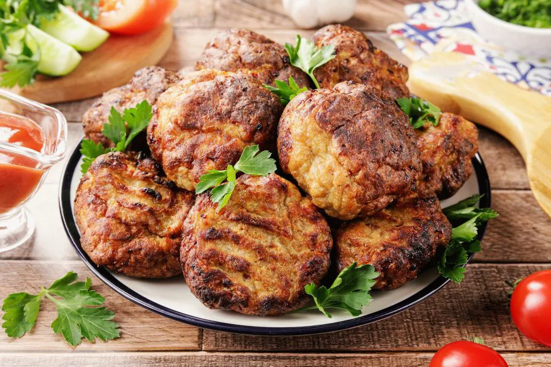
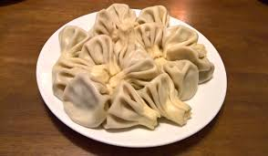
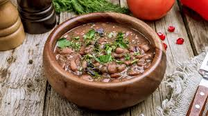
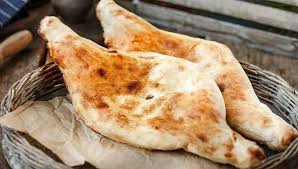

ხახვი - 1 ცალი ნიორი - 2 კბილი პურის გული (ბატონი) - 100 გ რძე - 200 მლ მარილი და სანელებლები ზეთი

ფქვილი - 1 კგ წყალი - 500 მლ მარილი
შერეული ფარში - 1 კგ ხახვი - 3 თავი მარილი წითელი წიწაკა, დაფქული ძირა წყალი
კარაქი - 20 გ კვერცხი - 3 ც გახეხილი ყველი - 180 გ ფქვილი - 600 გ რძე - 200 მლ ზეთი - 1 სკ საფუარი - 12 გ შაქარი - 1 ჩკ მარილი - 1 ჩკ

ლობიოს საკმაზი - 1.00 სკ მარილი ახალი ნიორის ფოთოლი ახალი პიტნა შავი პილპილი - 1.00 სკ რეჰანი - 1.00 სკ ქონდარი - 1.00 სკ ქინძი - 1.00 კონა ოხრახუში - 1.00 კონა ნიახური - 1.00 კონა ხახვი ნიორი დაფნის ფოთოლი - 1.00 ცალი წიწაკა - 1.00 ცალი ლობიო

ფქვილი თბილი წყალი მშრალი საფუარი შაქარი მარილი ზეთი